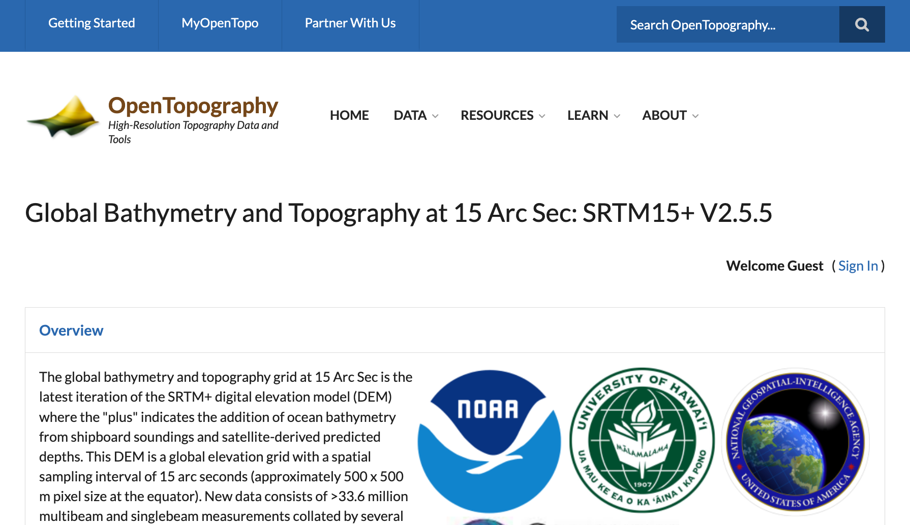
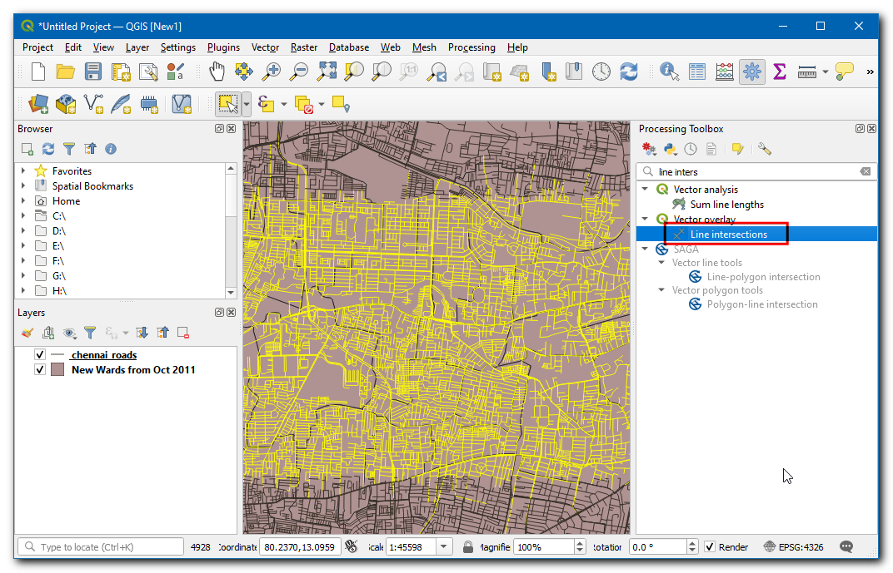
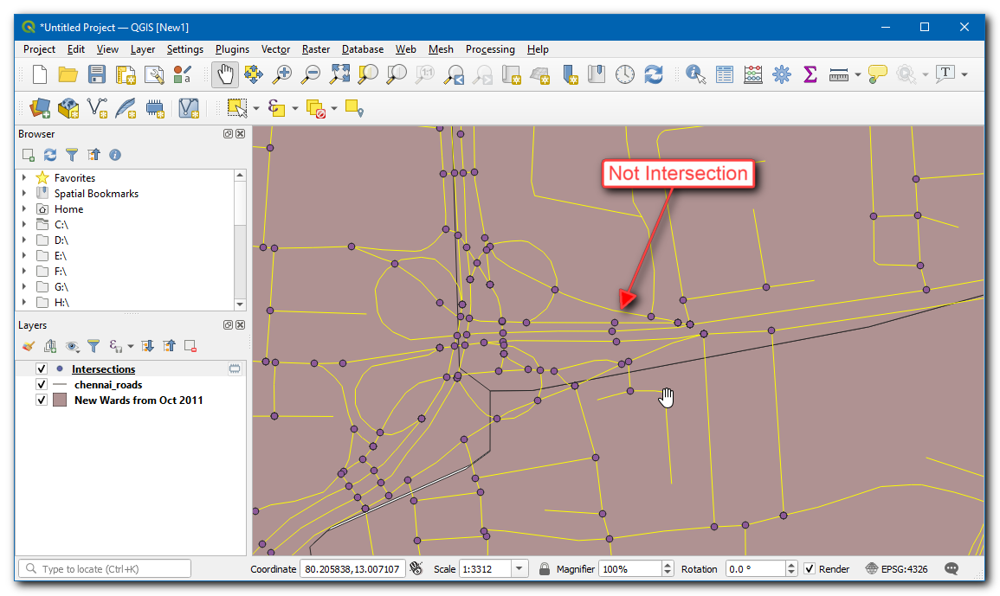
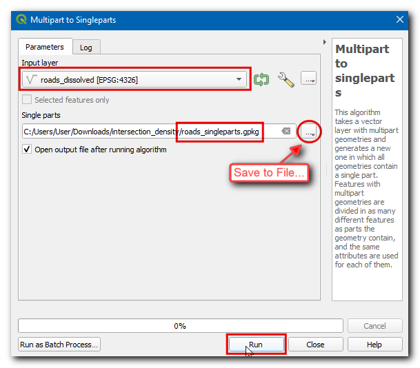
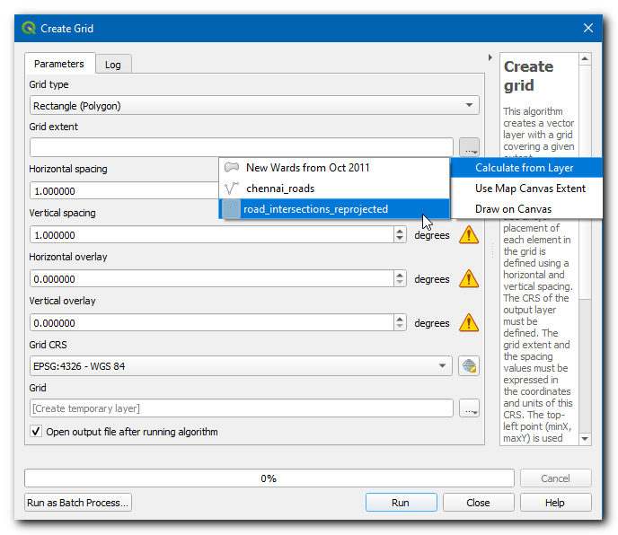
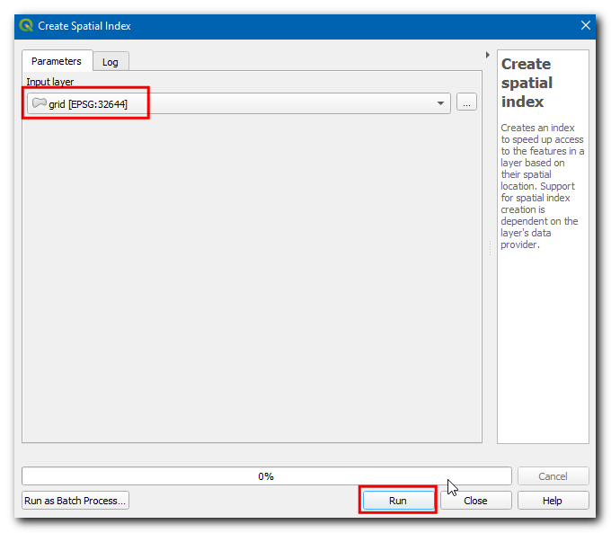

Calcular Densidad de Intersección de Calle (QGIS3)¶
La densidad de intersección de calle es una medida útil de conectividad de red. Se puede extraer y agregar las intersecciones de calle a lo largo de una cuadrícula regular para calcular la densidad. Este análisis es comúnmente usado en diseño de transporte así como en planificación urbana para determinar caminabilidad de barrios. Con la disponibilidad de un conjunto de datos global de red de calles de OpenStreetMap y QGIS, podemos fácilmente calcular y visualizar densidad de intersección para cualquier región del mundo.
Vista general de la tarea¶
En este tutorial, tomaremos los datos de la red caminera de OpenStreetMap y calcularemos la densidad de las intersecciones de las calles de la ciudad de Chennai, en la India.
Otras habilidades que aprenderá¶
Cómo descargar datos OpenStreetMap como archivos shape y recortarlos a su área de interés.
Cómo crear cuadrículas en QGIS
Obtener los datos¶
Usaremos los datos de opencities para conseguir los límites de ciudad para Chennai y, luego los datos de red de caminos de Extractos de Datos OpenStreetMap para la India.
Descargar el Límite de Ciudad¶
Visite el sitio web opencity, luego busque “Chennai wards map”.

Clic en el primer enlace y descargue los datos en formato KML. Se descargará una capa
Chennai-wards-2011.kml.

Descargar la Red de Caminos¶
Visite el servidor OpenStreetMap Data Extracts download de GEOFABRIK. Para este tutorial necesitaremos los datos para la ciudad de Chennai en India. Clic Asia.

Ahora en sub-regions, seleccione India.

El archivo
india-latest-free.shp.zipes el que estamos buscando. Clic en él para descargarlo. Estos datos pueden ser descargados en otros formatos también, a pedido.

Esta es una descarga grande que contiene un extracto de datos para todo el país. Descomprima
india-latest-free.shp.zip. Obtendrá muchas capas de archivos shape.

Corte la Red de Caminos al Límite de Ciudad¶
Ahora vamos a cortar la capa de caminos de nivel de país a nuestra área de interés. Abra QGIS, y arrastre y suelte
Chennai-wards-2011.kml.

En lugar de abrir una capa grande en QGIS, podemos leerla directamente del disco y recortarla. Abra la caja de herramientas de procesamiento y localice el algoritmo . Haga doble clic para abrirlo.

En la Capa de entrada seleccione
...y clic en Explorar la capa..

Navegue al directorio donde descargó los datos OpenStreetMap y seleccione
gis_osm_roads_free_1.shp. En la Capa de superposición elijaNew Wards from Oct 2011. Luego clic...en Clipped y seleccione Guardar a archivo…. Explore una carpeta donde quiere guardar los resultados, ingrese el nombrechennai_roads.gpkg, y clic Ejecutar.

Una vez finalizado el procesamiento, se cargará en el lienzo una nueva capa
chennai_roads.

Para su comodidad, puede descargar directamente una copia del conjunto de datos cortado del enlace de abajo:
Fuente de datos: [OPENCITIES] [GEOFABRIK]
Procedimiento¶
Ahora ambas capas utilizadas para el cálculo estarán disponibles, si has descargado los datos, entonces localiza
Chennai-Wards-2011.kmlychennai_roads.gpkgen Navegador, luego arrástralas y suéltalas en el lienzo.

La primera tarea es extraer las intersecciones de caminos. Esto puede hacerse usando la herramienta incorporada Intersección de líneas. Probemos esto primero en un pequeño subconjunto para ver si los resultados son satisfactorios. Seleccione la capa de caminos y use la herramienta Seleccionar objetos espaciales por Área para dibujar un rectángulo y seleccione unos pocos caminos.

Abra la caja de herramientas de Procesos y localice el algoritmo . Haga doble clic para abrirlo.

Seleccione
chennai_roadstanto para Capa de entrada como Capa de intersección. Asegúrese de marcar la casilla Objetos seleccionados solamente. Clic Ejecutar.

Se agregará una nueva capa
Intersections. Notará que mientras la mayoría de los puntos de intersección son correctos, hay algunos falsos positivos. Esto se debe a que el algoritmo considera como válidas las intersecciones de cada segmento de línea. Pero para nuestro análisis, necesitamos extraer sólo las intersecciones cuando 2 o más calles intersectan.

Elimine la capa de Intersecciones y haga clic en el botón Deseleccionar características de todas las capas para eliminar la selección. Ahora vamos a fusionar todos los segmentos de camino adyacentes, de modo que los segmentos entre las intersecciones se fusionen en una única característica. Abra la caja de herramientas de Procesos y localice el algoritmo . Haga doble clic para abrirlo.

Seleccione
chennai_roadscomo la Capa de entrada. Ingreseroads_dissolved.gpkgpara el nombre de la capa disuelta de salida. Clic Ejecutar.

La capa resultante
roads_dissolvedtiene todos los segmentos de camino unidos en un solo objeto espacial.

A continuación, abra la caja de herramientas de Procesos y localice el algoritmo . Haga doble clic para abrirlo. Seleccione la capa
roads_dissolvedcomo Capa entrada. Introduzcaroads_singleparts.gpkgcomo salida de partes individuales. Haga clic en Ejecutar.

La capa resultante
roads_singlepartstendrá todos los segmentos adyacentes fusionados, elimina las capasroads_dissolvedychennai_roads. Ahora, abra la caja de herramientas Procesos y localice el algoritmo . Haga doble clic para iniciarlo.

Seleccione
roads_singlepartstanto como Capa de entrada y Capa de intersección. A la capa de salida Intersecciones, dele el nombreroads_line_intersections.gpkg. Clic Ejecutar.

Nota
Esta es una operación computacionalmente intensiva y podría tomar un largo tiempo dependiendo de la capacidad de procesamiento de su computadora.
La capa resultante
roads_line_intersectionstiene ahora todas las intersecciones correctamente identificadas. Pero todavía no es perfecta. Utilice la herramienta Seleccionar características por área y seleccione cualquier intersección. Verá que en cada intersección hay algunos puntos duplicados de segmentos adyacentes. Si utilizamos esta capa para el análisis posterior, el resultado será un número inflado de intersecciones. Vamos a eliminar los duplicados, abra la caja de herramientas de procesamiento y localice el algoritmo . Seleccioneroads_line_intersectionscomo Capa de entrada e introduzcaroad_intersections.gpkgcomo capa de salida Cleaned. Haga clic en Ejecutar.

La nueva capa
road_intersectionstiene el número correcto de intersecciones de carretera extraído de la capa de origen. Haga clic con el botón derecho del ratón en la capa antiguaroad_line_intersectionsy seleccione Quitar capa` para eliminarla.

Ahora calcularemos la densidad de puntos superponiendo una cuadrícula regular y contando los puntos en cada polígono de la cuadrícula. Debemos reproyectar los datos a un SRC proyectado para poder utilizar unidades de medida lineales. Podemos utilizar un SRC apropiado basado en la zona UTM donde se encuentra la ciudad. Puedes ver el mapa UTM Grid Zones of the World para localizar la zona UTM de tu ciudad. Chennai se encuentra en la zona UTM 44N. Abra la caja de herramientas de procesamiento y localice el algoritmo . Haga doble clic para abrirlo.

Seleccione
road_intersectionscomo la Capa de entrada. Busque haciendo clic en el icono globo junto a SRC Destino y seleccioneEPSG:32664 - WGS 84 / UTM zone 44N. Esta es el SRC basado en el datum WG84 para la Zona UTM 44N. Ingrese para la capa de salida Reproyectado el nombreroad_intersections_reprojected.gpkg. Clic Ejecutar.

Una vez que termine el procesamiento y sea agregada la capa
road_intersections_reprojected, clic-derecho y seleccione . Y quite la caparoad_intersections.

El SRC del proyecto se actualizará en la parte inferior derecha de la ventana. El propósito de este paso es asegurar que todas las capas se muestren en el SRC de la nueva capa. Ahora estamos listos para crear la cuadrícula utilizando la
road_intersections_reprojectedcomo referencia. Abra la caja de herramientas de procesado y localice el algoritmo . Haga doble clic para abrirlo.

Seleccione el tipo de Cuadrícula como Rectángulo (Polígono). Clic el botón
...en Extensión de cuadrícula y seleccione .

Seleccione el SRC de Proyecto como el SRC de la Cuadrícula. Queremos crear una cuadrícula de 1km x 1km, por lo que defina tanto el Espaciado horizontal como el Espaciado vertical como
1000metros. Guarde la capa de salida Cuadrícula comogrid.gpkg. Clic Ejecutar.
Se creará la capa
gridque contiene los polígonos de la cuadrícula rectangular. Ahora podemos contar el número de puntos de cada polígono, pero como nuestras capas son grandes, este proceso puede llevar mucho tiempo. Una forma de acelerar las operaciones espaciales es utilizar un Índice espacial. Abra la caja de herramientas de procesamiento y localice el algoritmo . Haga doble clic para abrirlo.

Seleccione la capa
gridy haga clic en Ejecutar, ahora la capa tendrá un índice espacial que puede aumentar el rendimiento del cálculo con esta capa.

Abra la Caja de herramientas Procesos y localice el algoritmo

Seleccione
gridcomo la Capa polígono yroad_intersections_reprojectedcomo la Capa de puntos. Guarde la capa de salida Conteo comogrid_count.gpkg. Clic Ejecutar.
La capa resultante
grid_counttendrá un atributo NUMPOINTS que contiene el número de puntos de intersección dentro de cada cuadrícula. Hay muchas cuadrículas con 0 puntos. Ayudará a nuestro análisis y visualización quitar polígonos de cuadrícula que no contienen intersecciones. Abra la Caja de herramientas Procesos y localice el algoritmo .

Seleccione
grid_countcomo la Capa de entrada, luego seleccioneNUMPOINTScomo Atributo de selección,>en Operador e ingrese0como el Valor. Guarde la capa de salida Extraído (atributo) comogrid_counts_chennai.gpkg. Clic Ejecutar.

La capa resultante
grid_counts_chennaitendrá polígonos de cuadrícula sobre la ciudad de Chennai y contiene el número de intersecciones de carreteras como un atributo para cada polígono. Elimine todas las capas exceptogrid_counts_chennai.

Vamos a limpiar la tabla de atributos de nuestra capa de datos. El método preferido para realizar cualquier cambio en la tabla de atributos es utilizar un algoritmo de procesamiento llamado Rehacer Campos, abra la caja de herramientas de procesamiento y localice el algoritmo . Haga doble clic para abrirlo. Haga clic en cualquier fila de la sección Field Mapping para seleccionarla. Puede mantener la tecla Mayúsculas para seleccionar varias filas, seleccione todos los campos excepto fid y NUMPOINTS. Haga clic en el botón Borrar campos seleccionados.

Cambie el nombre del campo NUMPOINTS por
intersection_densityy guarde la capa comoroad_intersection_density.gpkg, haga clic en Ejecutar.

Démosle estilo a esta capa para ver la densidad de cada cuadrícula. Seleccione la capa
road_intersection_densityy clic Abrir el panel de estilo de capa. Seleccione el representador Graduado, y en Valores, seleccione Intersection Density, una Rampa de colores de su gusto. Defina Clases como7y clic Clasificar.

En los valores introduzca
0-50,50-100,100-150y así sucesivamente hasta300 - 350. Ahora ha creado un mapa que muestra la densidad de las intersecciones en toda la ciudad.

If you want to report any issues with this tutorial, please comment below. (requires GitHub account)(